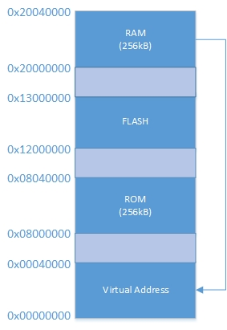
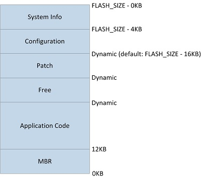

|
HS6621 Programming Guide
Bluetooth Low Energy (BLE) 5.0
|


|
|
HS6621 Programming Guide
Bluetooth Low Energy (BLE) 5.0
|
|
HS6621 memory consists of ROM, RAM, external SPI Flash. Cache have dedicated RAM. The memory map is shown as follow:

The ROM code is located at [0x08000000, 0x08040000), in which Bootloader, BT Stack, Flash Driver and other platform modules are built.
HS6621 has two pieces of RAM, the ULP RAM located at [0x20000000, 0x2001E000) and the LP RAM located at [0x2001E000, 0x2003E000).
The max clock speed of ULP RAM is 32MHz, and the clock of LP RAM is same as CPU.
HS6621 has a 16K bytes cache, and it co-works with SPIC (SPI Flash Controller) to speed up the SPI Flash read.
In the current SDK, the RAM is remaped as virtual address, the virtual ULP RAM located at [0x00000000, 0x0001E000) and the virtual LP RAM located at [0x0001E000, 0x0003E000)
Different from RAM which can be read / written directly，flash is a kind of non-volatile storage for code shadowing to RAM, executing code directly, or storing data. Flash must be empty or erased before written into.
If flash access just needs single mode with read / program / erase, there are lots of flash models meeting the requirement. If Dual / Quad modes and other enhanced functions are required, such as flash Deep Power-down (DP) for power saving, or software Block Protect (BP) for flash program / erase protection, choosing flash model from Approved Vendor List provided by Onmicro is strongly suggested.
In order to enhance the performance, high speed read mechanism is also available in the flash driver. HS6621 supports executing code (XIP) on SPI Flash, but there are also some limitations and precautions.
There are three basic operations for flash read, write, and erase operations.
HS6621 has internal SPI Flash, and it is located at [0x12000000,0x13000000).
The flash is divided into 5 parts: MBR, Application code, Patch, Configuration and System Info area.
User can use the free area to save the custom data. Call function mbr_get_free_area() to get the free area.

HS6621 supports external SPI Flash and its pin defined like follow:

Pin Descriptions:
| No. | Symbol | Extension | Remarks |
|---|---|---|---|
| 1 | CS# | - | Chip select |
| 2 | SO | SIO1 | Serial data output for 1 x I/O, Serial data input and output for 4 x I/O read mode |
| 3 | WP# | SIO2 | Write protection active low, Serial data input and output for 4 x I/O read mode |
| 4 | GND | - | Ground of the device |
| 5 | SI | SIO0 | Serial data input for 1x I/O, Serial data input and output for 4 x I/O read mode |
| 6 | SCLK | - | Serial interface clock input |
| 7 | HOLD# | SIO3 | To pause the device without deselecting the device, Serial data input and output for 4 x I/O read mode |
| 8 | VCC | - | Power supply of the device |
API reference: sf.h
Example reference: example_sf.c
Except to the standard Serial Peripheral Interface (SPI), most flash models also support high performance Dual/Quad modes I/O SPI controlled by six pins :
Although almost all flash models support Dual and Quad modes, the command set and mode switch rules are not all same.
In order to support as many flash models as possible, single mode (1 bit-mode) is used at boot time. If users need to switch to high speed bit mode (2 or 4 bit mode), the interface provided in the SDK is called: sf_config() to switch to high bit mode. The parameter "width" is used to configure bit mode, and return value of the function indicates whether the switch is successful.
The prototype of the interface function provided by SDK for bit mode switching is as follows:
Although flash supports HW protect pin (#WP) to lock all flash to prevent writing and erasing operations, there are still two disadvantages.
A mechanism to solve these problems is flash software Blocks Protection (BP). It uses some BP bits in flash status register to select the level (range) to protect as described below.
Flash uses BP(x) bits in status registers to identify numbers of blocks to lock, and TB bit to determine the direction to lock. HS6621 only supports locking from the low address ends of flash.
Here we just use BP to protect some important data such as configuration, security, and code sections, not all portions will be protected. BP function is not available for customers because different flash vendors and models have different rules and limitation. Accessing status registers frequently will damage flash.
If you want get the internal flash datasheet, please contact your FAE.
The power mode of Flash is mainly divided into three scenarios: working, standby and Power Down. The power consumption of the working mode is generally about 10 mA, while the power consumption of standby mode is usually about 10uA order of magnitude. The power consumption of the Power Down mode is lower, even less than 1 uA.
Flash automatically enters the standby mode without any access, and automatically enters the working state when it needs to be accessed again.
After calling sf_enable(), the flash will be power on. 1 second after calling the sf_enable function, the flash will automatically power off. So just call sf_enable function before operating flash.
Unlike SRAM, flash is a non-volatile second storage. Because of 100K times program / erase limitation, flash is not suggested for performing write/erase operations frequently.
If the remaining RAM space is enough, APP code can be directly executed on RAM, which is conducive to improving performance and reducing power consumption. However, if the APP code is so large that the remaining RAM space is not enough, some or all of the APP codes need to be executed on flash.
Then XIP demo project is located in SDK\examples\ble_app_simple_server\keil_flash_xip
 1.8.17
1.8.17